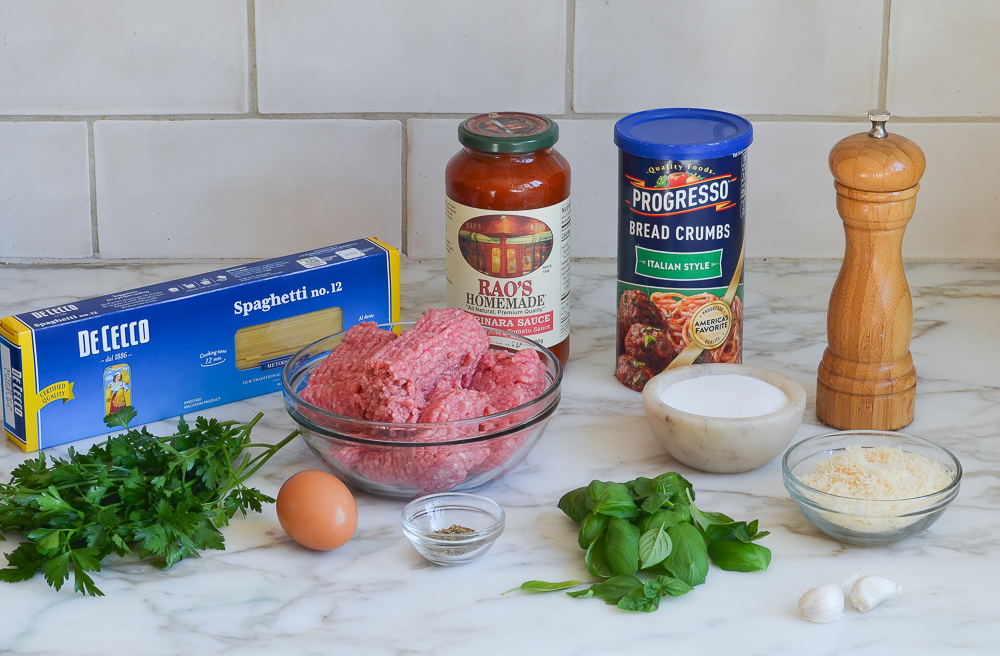
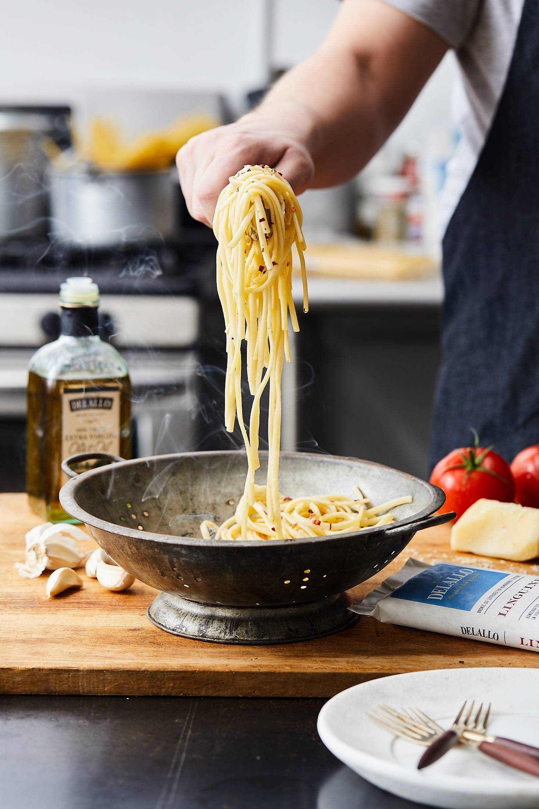
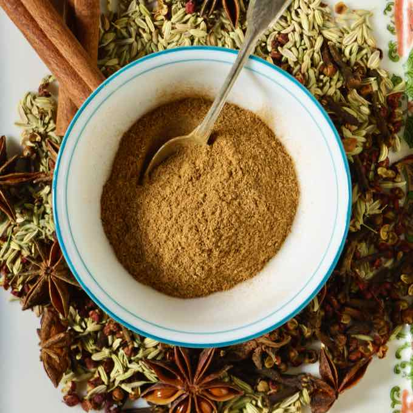
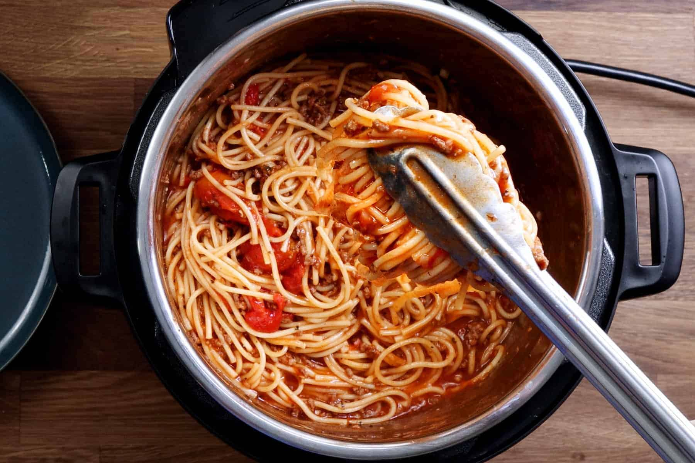

STEP 3
Stir the diced tomatoes, tomato sauce, and tomato paste in the same pan.

Spaghetti Recipe Guide
STEP 1
Combine garlic, green pepper, ground beef, and onion in a saucepan that is moderately large.

Cook the ingredients and stir until the meat is brown and vegetables look tender. Then you want to drain the grease.

Stir the diced tomatoes, tomato sauce, and tomato paste in the same pan.
Season it all with oregano, basil, salt, and pepper.

FINAL STEP
Simmer the spaghetti sauce for just 1 hour. Make sure you stir it occasionally.
